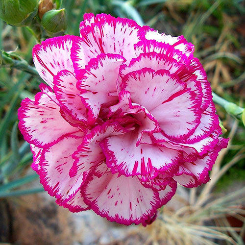
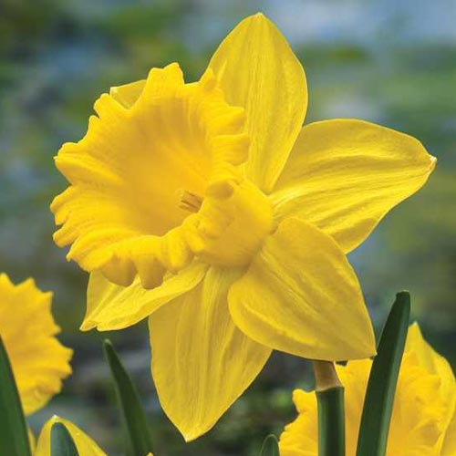
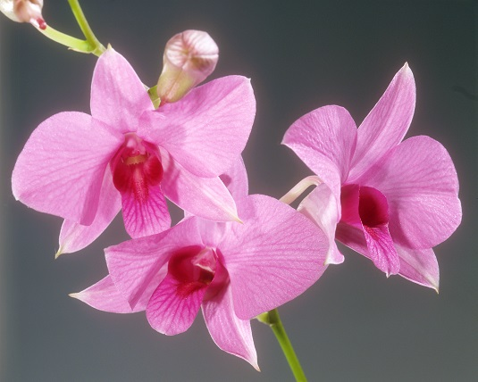

| Picture
| Name
| Description
|
|  |
Carnation |
A long-lasting flower available in a wide variety of colors. Also known as dianthus, carnations have a long history of cultivation and are traditionally associated with fascination and distinction. |
|  |
Daffodil |
The common name for flowers in the Narcissus family, which consist of trumpet-shaped blooms and are often yellow or white in color. Daffodils are traditionally associated with chivalry. |
 |
Daisy |
Daisies are identified by their disk-shaped, multi-petaled blooms. They most often consist of white or pink petals surrounding a yellow center. |
|  |
Orchid |
A diverse family of ornamental flowers prized for their exotic appearance. Orchids are available in many colors and varieties and are often used to symbolize rare and delicate beauty. The Vanilla orchid is a common food flavouring. |